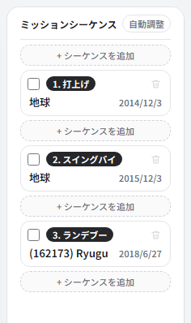
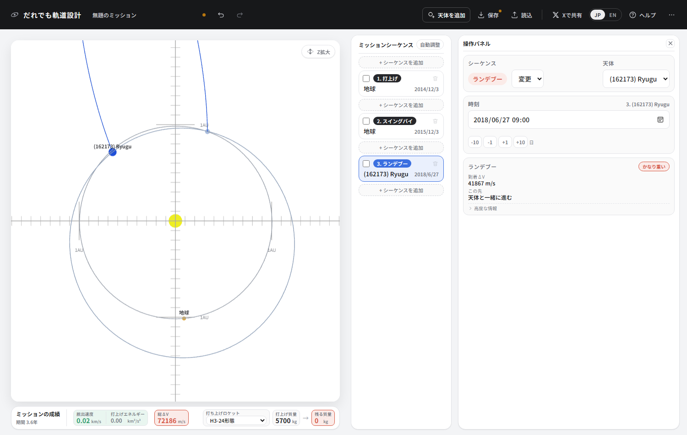
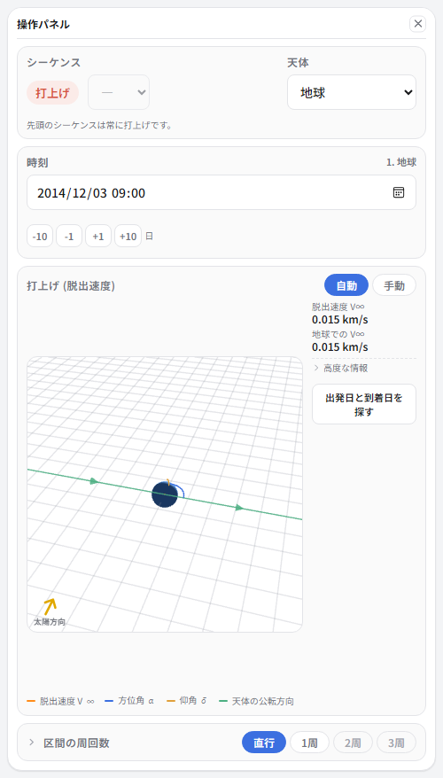
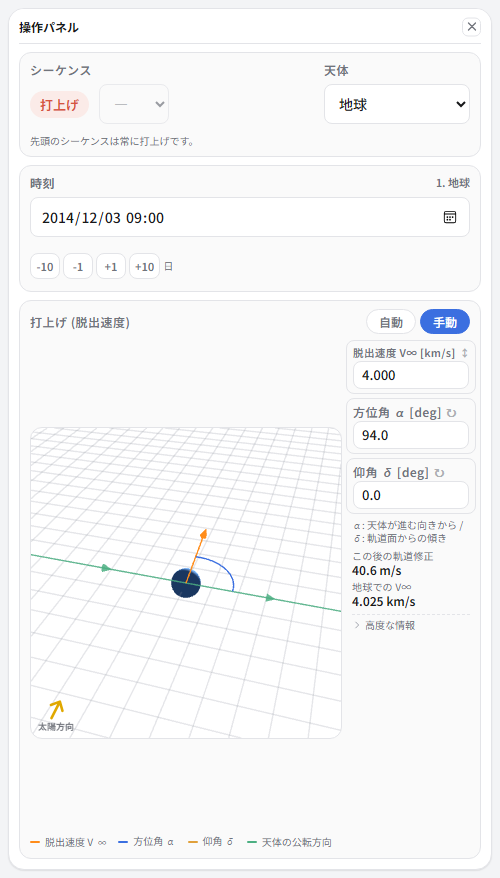
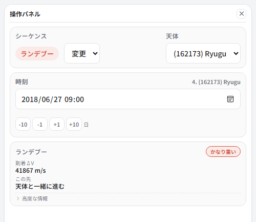
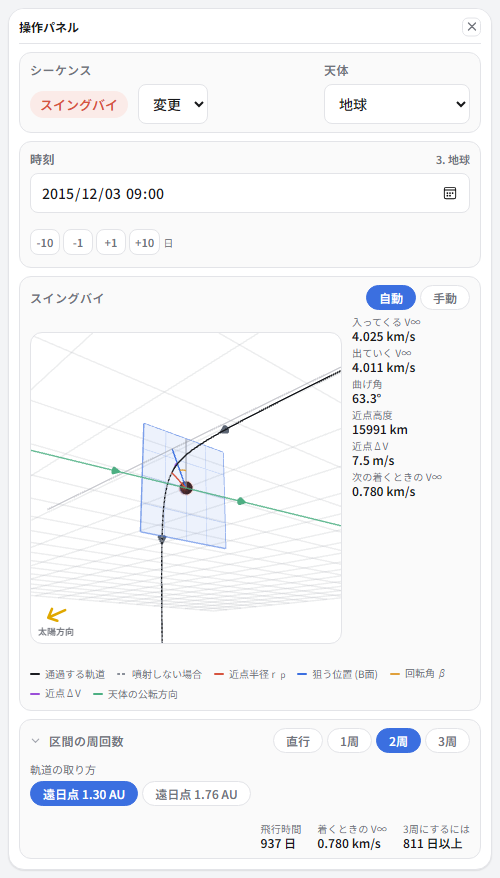
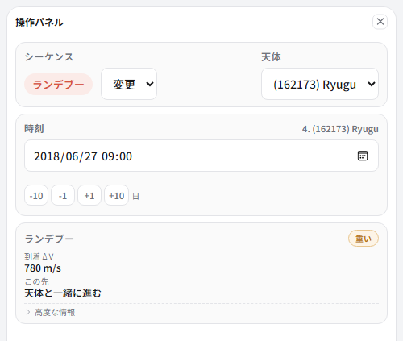
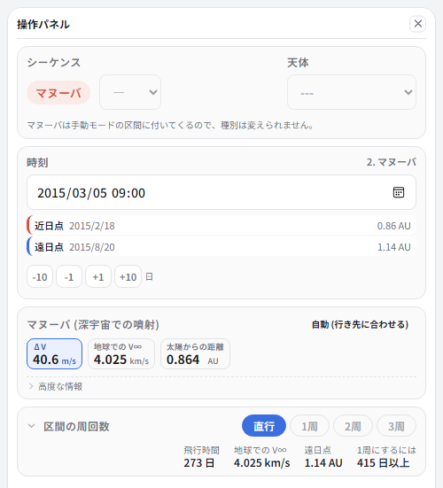
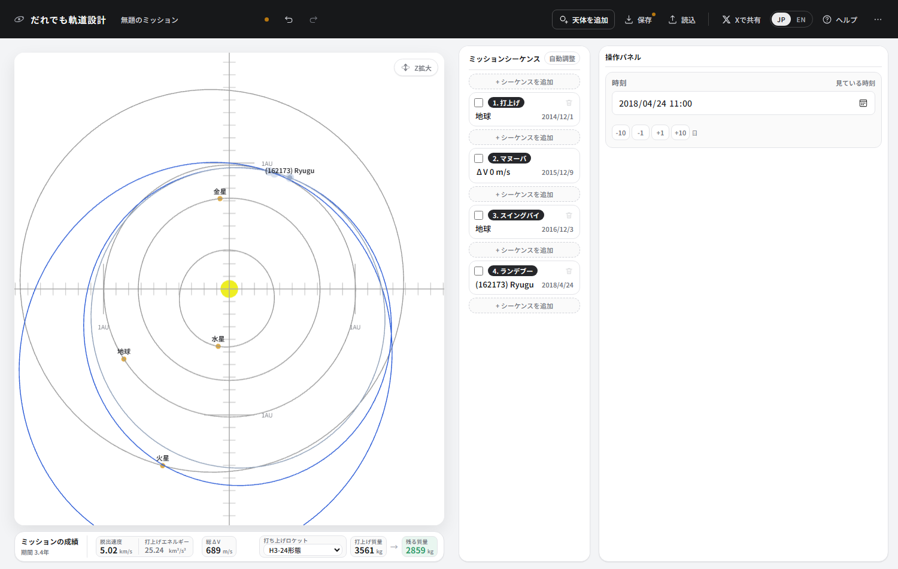

⑤ 小惑星にランデブーする
はやぶさ2が向かった小惑星リュウグウへ。実際の打上げ日・地球スイングバイ日・到着日を そのまま入れて再現します。通り過ぎるのではなく速度を合わせて並んで進むので、 惑星に行くのとは勝手が違います。
ここで覚えること
- 掲載されていない天体を一覧に追加する
- 1年で地球に戻ってくる軌道 (ΔVEGA / EDVEGA)
- 太陽を何周してから着くかを選ぶ (区間の周回数)
- フライバイとランデブーの違い
リュウグウを呼び出す
画面上のバーの「天体を追加」を押します。 小惑星・彗星・恒星間天体の目録 (国際天文学連合 小惑星センターのデータ) から検索できます。
検索欄に Ryugu か 162173 と入れて、出てきた
(162173) Ryugu を選び、「追加」を押してください。
以後、天体の欄にリュウグウが並びます。
組み立てる
-
シーケンスを3つ作ります。すべてはやぶさ2の実際の日付です。
番号 種別 天体 日付 1 打上げ 地球 2014/12/03 2 スイングバイ 地球 2015/12/03 3 ランデブー (162173) Ryugu 2018/06/27 
小天体で選べる種別はフライバイとランデブーです。 スイングバイや周回軌道投入は出てきません。重力が小さすぎて、軌道を曲げることも捕まることもできないからです。

打上げのちょうど1年後に地球へ戻ってくる、という並びです。 チュートリアル④のJunoは2年でしたが、はやぶさ2は1年で戻りました。
1年で戻るということ

チュートリアル④と同じ壁です。出発点と到着点が同じ場所なので、 自動モードは「その場から動かない」という答えを返してきます。
同じ手を使います。打上げのシーケンスを手動にして、噴射のシーケンスを後ろに付け、 その日付を3か月後 (2015/03/05) にします。
-
打上げのシーケンスに戻り、脱出速度 4.0 km/s、方位角 α = 94度、仰角 δ = 0 を入れます。

α 94度。地球が進む向きから、ほぼ真横に飛び出します。
直行では届かない
地球スイングバイまではつながりました。では、その先のリュウグウは。 3番目のシーケンス (ランデブー) を選んでみてください。

41867 m/s。総ΔVは84 km/sを超え、残る質量は0です。まったく話になりません。
理由は、地球を出てからリュウグウに着くまでの937日 (2年7か月) という長さにあります。 区間の既定は「太陽をまわらずに直接向かう」です。 2年7か月かけてまっすぐ向かう軌道は、いったん太陽系のはるか外まで出て 戻ってくるような無茶なものになります。
太陽を2周してから着く
本当のはやぶさ2は、この2年7か月のあいだ太陽のまわりを2周しています。 操作パネルのいちばん下、「区間の周回数」を開いて、2周を選んでください。


41867 → 780 m/s。日付は1日も変えていません。 変えたのは「途中で太陽を何周するか」という、それだけです。
噴射とスイングバイを読む

噴射のシーケンスを見ると 41 m/s。地球に戻ってくるときの速さを微調整しているだけです。 この「戻ってくるときの速さを噴射で作る」のがΔVEGAで、 はやぶさ2はこれをイオンエンジンでやりました (EDVEGA)。

地球のそばを高度16000 kmで通り、63度曲げられて、リュウグウの軌道へ向かいます。 近点ΔVは7.5 m/s。ほとんど重力だけです。
ランデブーとフライバイ
最後がランデブーです。到着ΔV 780 m/s は、リュウグウに速度を合わせて 並んで進むために要る噴射です。ここをフライバイに変えてみてください。 ΔVは0になります。通り過ぎるだけなら、何もしなくていい。
小天体を相手にするときは、ここが効いてきます。惑星なら重力が助けてくれる (捕まえてくれる) ところを、 小惑星では全部自分の燃料で消費することになります。 リュウグウの重力は弱すぎて、周回軌道という考え方が成り立ちにくいです。 はやぶさ2が「周回」ではなく「ホームポジションに留まる」と言っていたのはこのためです。
できあがり

| 項目 | この設計 | 実際のはやぶさ2 |
|---|---|---|
| 打上げ | 2014/12/03 | 2014/12/03 |
| 打上げエネルギー C3 | 16.0 km²/s² | 22.4 km²/s² |
| 地球スイングバイ | 2015/12/03 | 2015/12/03 |
| スイングバイの高度 | 約16000 km | 3090 km |
| リュウグウ到着 | 2018/06/27 | 2018/06/27 |
| 深宇宙での噴射 | 41 m/s (1回) | イオンエンジンで連続 |
| 総ΔV | 828 m/s | — |
この先
はやぶさ2はここからサンプルを積んで地球に帰ってきました。 チュートリアル①でやった帰りの組み立てを、ここに足してみてください。 リュウグウのシーケンスの後ろに再出発を足し、 最後に地球への大気圏突入を置きます。 実機のカプセルは2020年12月5日に、11.6 km/sでオーストラリアに帰ってきました。